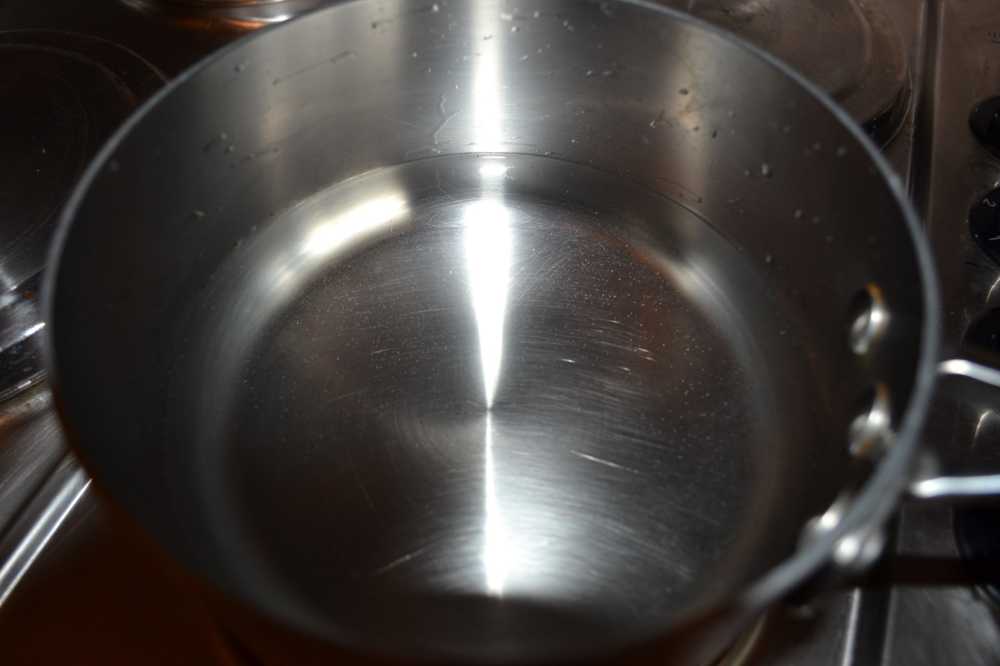
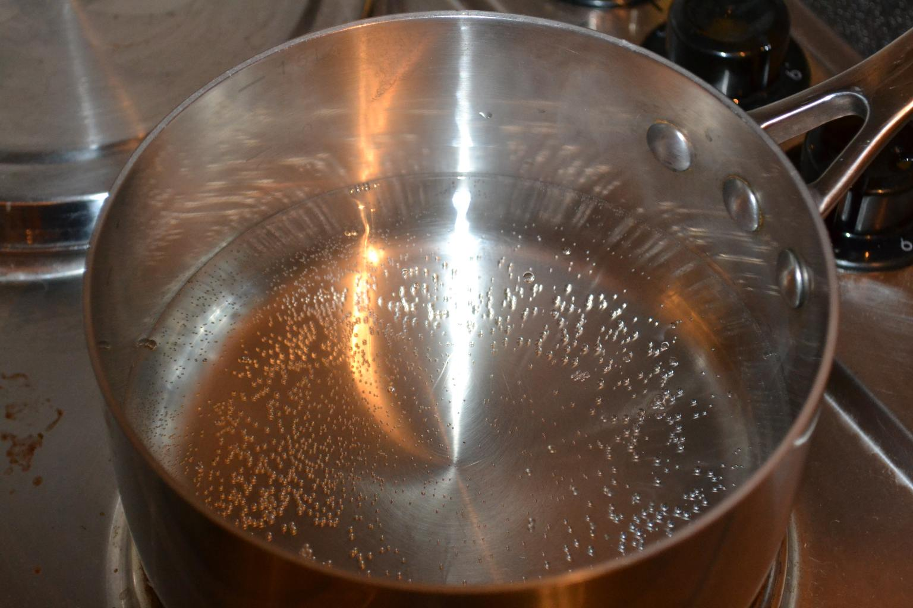
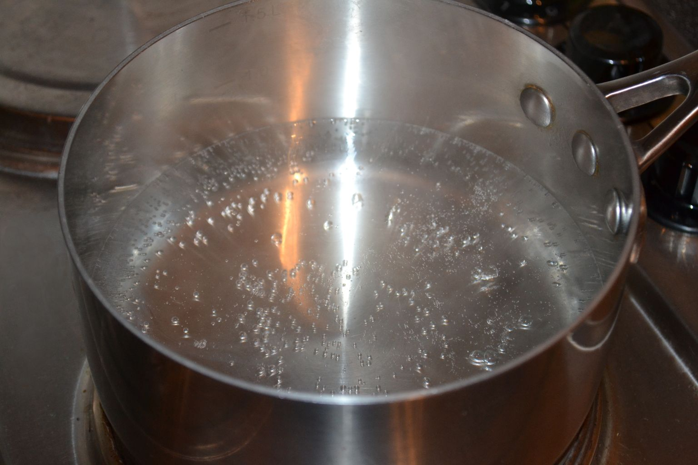

In boiling terminology, this is known as
pool
boiling
.
This is in contrast to
forced boiling
, where the
boiling fluid is driven through the boiler.
At first, nothing happens as the liquid and walls are well
below the water boiling temperature $T_w\ll T_{boil}$
(the same as
the vapour saturation temperature
$T_{sat}$
).

Heat is transferred by
convection
but no significant
amount of vapour is generated. This is
NOT boiling
but still
classified as
Natural Convection
.
After a while the wall rises above the boiling temperature
$T_w\gtrsim T_{sat}$
, and localised boiling occurs at the surface
of the plate.

Small bubbles will form but quickly dissolve or oscillate
as they are cooled by the fluid, which is still well below
$T_{sat}$
.
This is known as
subcooled boiling
even though
little vapour is produced.
After a while, the water begins to steam as it reaches the
saturation temperature!

Here, there are some bubbles on the surface but they
do not detach or grow
.
Water is
superheated
at the wall and convects to the
surface where it evaporates into steam.
This is the
convective region of boiling
, and can be
treated as
Natural Convection
.
As the wall temperature increases further relative to the
saturation temperature $T_w\gg T_{sat}$
, bubbles grow and detach
from the wall.
This is the critical boiling regime known as
nucleate
boiling
.
As the bubbles nucleate, grow then detach from the wall,
they mix the fluid and greatly increase the heat transfer.
We must consider
nucleate boiling heat transfer
coefficients
,
$h_{nb}$
.
Experimental measurements of bulk/boiling generate the
following curve
This is a plot of the log of the heat transfer rate $Q$
versus the log of the wall superheat,
$\ln(T_w-T_{sat})$
).
Plots of $\ln(h)$
versus
$\ln(T_w-T_{sat})$
are common in
the literature too, and they are qualitatively identical.
We can identify many features in this graph…
The first region of the graph is the
convective
boiling
regime.
Fluid is
superheated
at the wall and convects to the
surface of the fluid where it evaporates.
No significant vapour is generated at the wall and we can
use
Natural Convection
to calculate the heat transfer
coefficient.
\begin{align*}
h = C \left(\text{Gr Pr}\right)^n
\end{align*}
This region exists from $T_w=T_{sat}$
until the
Onset
of Nucleate Boiling
(ONB).
The second region of the graph is the
nucleate
boiling
regime (or “Bubbly Boiling” to the layman).
Vapour is generated at the wall and the mixing it causes
greatly increases the heat transferred.
This region exists from the Onset of Nucleate Boiling
(ONB) until the
critical heat flux is reached
(CHF).
This is the region in which industrial boilers typically
operate! But they don't operate near the CHF (see Burn-out)!
The final region of the graph is the
film boiling
regime (or mythbusters regime).
Here, the heat flux rapidly drops as the surface bubbles
coalesce into a large film, insulating the plate.
At the
Liedenfrost point
, film boiling becomes
stable (see Burn-out).
Beyond the Liedenfrost point, the heat transfer increases
again as
radiation
comes into play.
Why don't we operate industrial boilers near the critical
heat flux point?
Consider an electrical heater which by its nature has a
fixed duty $Q_{duty}$
…
If the heater is in the
or
regions at steady
state, the boiler is
stable
.
If fluctuations cause the wall to become
hotter
…
… the heat flux will
increase
above
$Q_{duty}$
…
… and the wall will cool down again back to the
steady state.
If the heater enters the
region, the
boiler becomes unstable.
If we heat up slightly passed the CHF…
… the heat flux will
decrease
below
$Q_{duty}$
…
… and the wall will heat up even more!
If you enter the unstable region from the CHF (heating),
the wall temperature will increase uncontrollably.
If you enter from the Liedenfrost point (cooling) the wall
temperature will drop uncontrollably.
This instability only exists between the CHF and the
Liedenfrost point
.
This is why the Liedenfrost point marks the onset of
stable film boiling
.
Unfortunately, this point is approaching the melting point
of the material the boiler is made out of, and we experience
Burn-out
if we reach here.
We will need to use
process control
(EG3575: Unit
Operations) to make sure that our boilers never burn-out.
The calculation of boiling heat transfer coefficients
strongly
depends on the surface type, roughness and
wettability, as well as the properties of the fluid.
Enhanced tubes
make these predictions even more
difficult, as the surface has a complex structure.
Between cleanings the transfer coefficient also changes
significantly.
For water boiling on copper plates it drops from
8000 W/m${}^2 $
K almost new to 3900 W/m
${}^2 $
K when just
cleaned (sandblasted), to 2600 W/m
${}^2 $
K after long use.
Needless to say, when designing boilers we need
experimental data.
But there are correlations that provide predictions in the
absence of this.
We will present and use the correlations given in Coulson
and Richardson Vol. 6.
First, we have the Forster-Zuber correlation
\begin{align*}
h_{nb}=0.00122\frac{k_L^{0.79} C_{p,L}^{0.45}
\rho_L^{0.49}}{\gamma^{0.5} \mu_L^{0.29} h_{fg}^{0.24} \rho_G^{0.24}}\left(T_w
- T_{sat}\right)^{0.24}\left(p_w-p_{sat}\right)^{0.75}
\end{align*}
where
$\gamma$
is the surface tension of the liquid, and
$h_{fg}$
is the latent heat of vapourisation.
This correlation requires many fluid properties, such as
the surface tension and the temperature and pressure at the hot
surface and in the bulk of the saturated fluid.
If these properties are not available, we must use another
correlation…
In the absence of both experimental data and sufficient
fluid data we can use the Mostinski correlation, given by
\begin{align*}
h_{nb} = 0.104 p_c^{0.69} q^{0.7}
\left[1.8\left(\frac{p}{p_c}\right)^{0.17}
+4\left(\frac{p}{p_c}\right)^{1.2}
+10\left(\frac{p}{p_c}\right)^{10}\right]
\end{align*}
where the operating pressure
$p$
and the critical pressure
$p_c$
are in units of bar.
Here, we need the critical pressure of the fluid
$p_c$
. This is a single value for each fluid and does not depend
on the temperature/pressure/density, which is readily available in
the literature.
An important thing to note is that the Mostinski
correlation is also a function of the heat flux $q\approx
h_{nb}\left(T_w-T_{sat}\right)$
.
The estimations of the Forster-Zuber correlation are
preferred over the Mostinski correlation,
if the data is
available
.
When designing a boiler, we must also ensure the boiler is
operating well below the Critical Heat Flux.
We need estimations for this, and Zuber presents a
correlation using several fluid properties
\begin{align*}
q_c=0.149 h_{fg} \rho_G^{0.5}\left(\gamma g
\left(\rho_L-\rho_G\right)\right)^{0.25}
\end{align*}
Again, if there is insufficient experimental data and
fluid property data, Mostinski provides a correlation in the
critical pressure.
\begin{align*}
q_c = 3.67\times10^4 p_c\left(\frac{p}{p_c}\right)^{0.35}
\left[1-\frac{p}{p_c}\right]^{0.9}
\end{align*}
where the operating pressure
$p$
and the critical pressure
$p_c$
are in units of bar.
Note:
These expressions are for the critical heat
flux (W/m
${}^2$
)
A common boiler configuration is the
kettle
reboiler
.
These are effectively
pool boiling
systems.
The expression for the heat transfer coefficients in
this system are given by
\begin{align*}
h\approx h_{nb}
\end{align*}
The expressions for $h_{nb}$
are similar to the
Forster-Zuber expression, modified for pipes and with terms to
account for the presence of other tubes in the bundle.
The more popular (cheaper) types of boilers are
forced
or
convective boilers
…
A kettle reboiler.
In industry, the complete forced vaporisation of a
fluid usually occurs up the inside of a vertical tube (see
right).
Here we can see that nucleate boiling and convective
heat transfer are occurring at the same time.
This is the start of us (re-)considering two phase
flow properly.
You may know these definitions of the two phase flow
patterns already…
Taken from Fig. 12.55 in Coulson and Richardson
Vol.6, pg.732
For forced-convective boiling, the effective
heat-transfer coefficient is split into two parts.
\begin{align*}
h_{cb} = f_c h_{conv.} + f_s h_{nb}
\end{align*}
The forced convection coefficient (calculated for the
liquid phase) and the nucleate boiling coefficient are
multiplied by the two-phase correction factors $f_{c}$
and
$f_s$
.
These are calculated from two charts provided in C&R
Vol. 6, via the
Lockhart-Martinelli
parameter,
$X_{tt}$
,
from multiphase flow.
The difference between
Subcooled
and
bulk
/
saturated
boiling.
The difference between
Forced
and
Pool
boiling.
The
bulk
/
saturated
boiling curve, with its
three
bulk
boiling regimes (convective, nucleating and film)
and each regimes characteristics.
When to choose to use the Forster-Zuber or Mostinkski
correlation for nucleate boiling.
How to calculate heat transfer coefficients for forced
boiling.